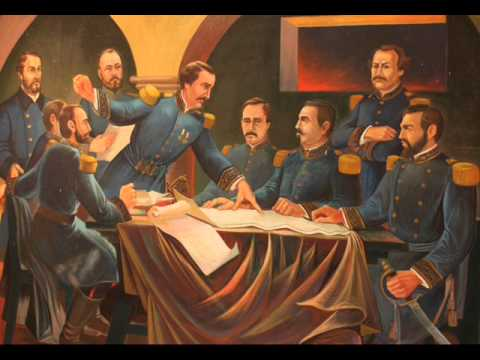

En octubre de 1861, Francia, Inglaterra y España suscribieron la Convención de Londres, en la cual se comprometieron a enviar contingentes militares a México ya que este tenía una gran deuda de 80 millones de pesos, aproximadamente eran 69 millones para los ingleses, 9 millones para los españoles y 2 millones para Francia.
La alianza tripartita amenazó al presidente Benito Juarez con una invasión inminente si no se saldaba por completo las deudas que México tenía con los tres países europeos.
Juarez responde con un exhorto para lograr un arreglo amistoso, y los invitó a conferenciar. Sin embargo, sabía que había una guerra inminente y trató de proteger la Ciudad de México trasladando pertrechos y ordenó la fortificación de Puebla. Creo al Ejército de Oriente y el hombre que se designó en el mando fue el general Ignacio Zaragoza.

En un principio la Alianza Tripartita aceptó el llamado al diálogo de Benito Juarez y sus representantes se reunieron con Manuel Doblado, ministro de Relaciones Exteriores del gobierno mexicano, quien consiguió que Juan Prim, representante español, y Lord John Russell por Inglaterra se retiraran. A este acuerdo se le conoce como los Tratados Preliminares de la Soledad.
El 5 de marzo, cuando aún se realizaban las negociaciones de los Tratados de la Soledad, llegó a Veracruz un contingente militar francés bajo el mando de Charles Ferdinand Latrille, conde de Lorencez. A finales de abril, Lorencez desconoció los Tratados de Soledad y se puso en marcha, junto con sus efectivos, hacia Puebla, con el fin último de conquistar la Ciudad de México.


 1
1 2
2 3
3 5
5 6
6 8
8